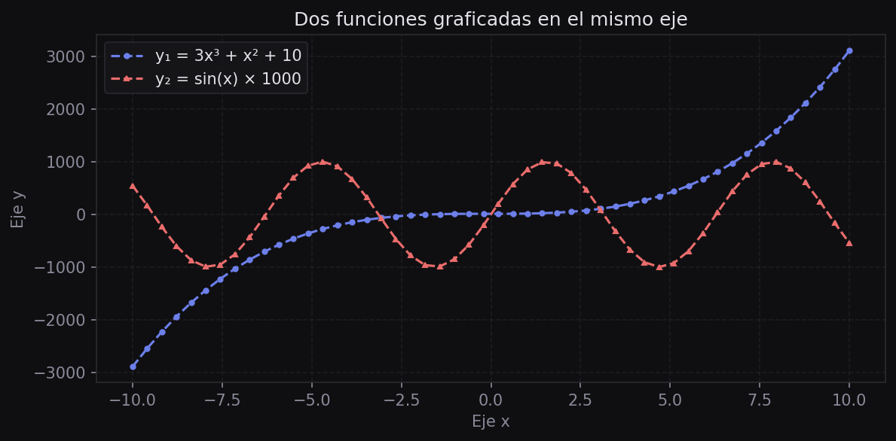
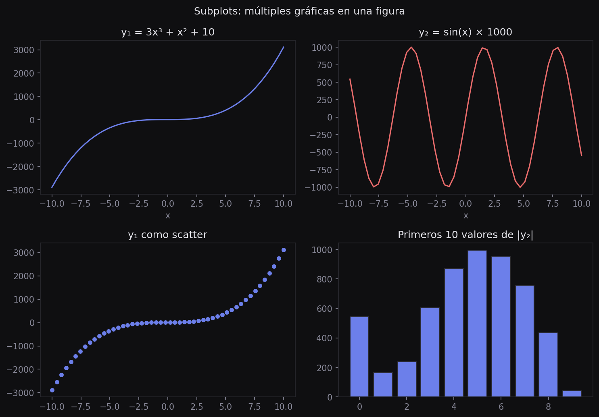

Visualización de Datos
Uso de Matplotlib y Seaborn para la exploración y comunicación visual de datos. Se revisan los tipos de gráficas más utilizados en análisis estadístico y cuándo aplicar cada uno.
Introducción
La visualización tiene dos propósitos distintos en un análisis: la exploración, donde se busca entender la estructura de los datos, y la comunicación, donde se presentan hallazgos de forma precisa. Cada propósito tiene requerimientos distintos en términos de rapidez y nivel de detalle.
import matplotlib.pyplot as plt
import seaborn as sns
import numpy as np
import pandas as pd
%matplotlib inlineAnatomía de una figura
En Matplotlib una Figure es el contenedor completo. Dentro de ella viven uno o varios Axes (ejes), que son las gráficas individuales. Esta distinción es fundamental:
# Interfaz funcional (rápida para explorar)
plt.plot([1, 2, 3], [4, 5, 6])
plt.title("Mi gráfica")
plt.xlabel("Eje x")
plt.ylabel("Eje y")
plt.show()
# Interfaz orientada a objetos (recomendada para control total)
fig, ax = plt.subplots()
ax.plot([1, 2, 3], [4, 5, 6])
ax.set_title("Mi gráfica")
ax.set_xlabel("Eje x")
ax.set_ylabel("Eje y")
plt.show()Para exploración rápida usa plt.plot(). Para cualquier figura final o con múltiples subplots, usa siempre fig, ax = plt.subplots() — te da control preciso sobre cada elemento.
Tipos de gráficas
Gráfica de líneas
Ideal para mostrar cómo evoluciona una variable continua. Se usa con series de tiempo o funciones matemáticas.
x = np.linspace(-10, 10, 100)
y1 = 3 * x**3 + x**2 + 10
y2 = np.sin(x) * 1000
fig, ax = plt.subplots(figsize=(8, 4))
ax.plot(x, y1, color="#6c7fea", label="cúbica", linestyle="--")
ax.plot(x, y2, color="#f06595", label="seno", linestyle="-")
ax.set_title("Funciones y1 y y2")
ax.set_xlabel("x")
ax.set_ylabel("y")
ax.legend()
ax.grid(True, alpha=0.3)
plt.show()
label y legend() identifican cada serie, y cómo linestyle y marker controlan el aspecto visual.Scatter plot (dispersión)
Muestra la relación entre dos variables numéricas. Permite detectar correlaciones, agrupaciones y valores atípicos.
df = pd.read_csv("data/csvs/examenes.csv")
fig, ax = plt.subplots(figsize=(7, 5))
ax.scatter(df["study_hours"], df["exam_score"], alpha=0.3, s=15)
ax.set_xlabel("Horas de estudio")
ax.set_ylabel("Calificación del examen")
ax.set_title("Horas de estudio vs calificación")
plt.show()
# Con Seaborn (agrega regresión automáticamente)
sns.scatterplot(data=df, x="study_hours", y="exam_score", hue="gender", alpha=0.5)Histograma
Muestra la distribución de una variable numérica agrupando los datos en intervalos (bins).
# Comparar distribución de calificaciones por género
mujeres = df[df["gender"] == "female"]["exam_score"]
hombres = df[df["gender"] == "male"]["exam_score"]
fig, ax = plt.subplots(figsize=(7, 4))
ax.hist(hombres, bins=30, alpha=0.6, label="Hombres")
ax.hist(mujeres, bins=30, alpha=0.6, label="Mujeres")
ax.set_xlabel("Calificación")
ax.set_ylabel("Frecuencia")
ax.legend()
plt.show()Boxplot (diagrama de caja)
Resume la distribución mostrando la mediana, los cuartiles y los valores atípicos. Muy útil para comparar grupos.
# Matplotlib
fig, ax = plt.subplots(figsize=(7, 4))
ax.boxplot(df["exam_score"])
ax.set_ylabel("Calificación")
ax.grid(True, axis="y", alpha=0.3)
plt.show()
# Seaborn (más expresivo)
sns.boxplot(data=df, y="exam_score", hue="study_method")
plt.show()La línea central es la mediana. La caja abarca el rango intercuartil (Q1–Q3). Los bigotes llegan hasta 1.5 × IQR. Los puntos fuera son valores atípicos.
Gráfica de barras
Para datos categóricos: muestra frecuencias o promedios por categoría.
frecuencia = df["gender"].value_counts()
fig, ax = plt.subplots(figsize=(5, 4))
ax.bar(frecuencia.index, frecuencia.values)
ax.set_xlabel("Género")
ax.set_ylabel("Cantidad")
plt.show()
# Seaborn con promedio por grupo
sns.barplot(data=df, y="exam_score", hue="study_method")
plt.show()Heatmap de correlación
Visualiza la matriz de correlación entre todas las variables numéricas. Permite identificar de un vistazo qué variables están relacionadas.
cols_numericas = ["study_hours", "class_attendance", "sleep_hours", "exam_score"]
matriz_corr = df[cols_numericas].corr()
fig, ax = plt.subplots(figsize=(6, 5))
sns.heatmap(matriz_corr, annot=True, fmt=".2f", ax=ax,
cmap="coolwarm", vmin=-1, vmax=1)
ax.set_title("Matriz de correlación")
plt.show()Subplots: múltiples gráficas
Con plt.subplots(nrows, ncols) se crea una cuadrícula de gráficas en una sola figura:
x = np.linspace(-10, 10, 100)
fig, ax = plt.subplots(nrows=2, ncols=2, figsize=(10, 7))
ax[0, 0].plot(x, x**2)
ax[0, 0].set_title("Cuadrática")
ax[0, 1].plot(x, np.sin(x))
ax[0, 1].set_title("Seno")
ax[1, 0].plot(x, np.exp(-x**2))
ax[1, 0].set_title("Gaussiana")
ax[1, 1].plot(x, np.abs(x))
ax[1, 1].set_title("Valor absoluto")
plt.tight_layout()
plt.show()
ax[fila, col] es un eje independiente: línea, línea, scatter y barras sobre los mismos datos. plt.tight_layout() evita que los títulos se solapen.Seaborn vs Matplotlib
Ambas bibliotecas se complementan. La regla general es:
| Situación | Recomendación |
|---|---|
| Exploración rápida de relaciones | Seaborn — menos código, más expresivo |
Gráficas con coloreado por variable categórica (hue) |
Seaborn |
| Control total del estilo y posición de elementos | Matplotlib con interfaz OO |
| Funciones matemáticas o datos personalizados | Matplotlib |
| Figuras con múltiples subplots | Matplotlib + Seaborn en conjunto |
Ejemplo EDA visual completo con seaborn
Una exploración típica de múltiples variables categóricas contra la variable objetivo:
categoricas = ["gender", "study_method", "sleep_quality", "exam_difficulty"]
muestra = df.sample(1000, replace=False)
for col in categoricas:
sns.scatterplot(data=muestra, x="study_hours", y="exam_score", hue=col, alpha=0.6)
plt.title(f"Horas de estudio vs calificación — coloreado por {col}")
plt.show()